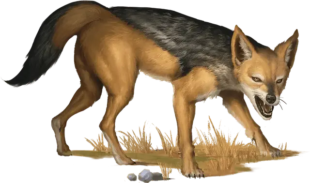

Шакал
Jackal
Маленький Зверь, без мировоззрения

Класс Доспеха 12
Хиты 3 (1к6)
Скорость 40 футов
| мод | спас | ||
|---|---|---|---|
| СИЛ | 8 | −1 | −1 |
| ЛОВ | 15 | +2 | +2 |
| ТЕЛ | 11 | +0 | +0 |
| мод | спас | ||
|---|---|---|---|
| ИНТ | 3 | −4 | −4 |
| МДР | 12 | +1 | +1 |
| ХАР | 6 | −2 | −2 |
Навыки Восприятие +3
Чувства пассивное Восприятие 13
Опасность 0
Бонус мастерства +2
Среда обитания Луг, Арктика
Особенности
Острый слух и тонкий нюх. Шакал совершает с преимуществом проверки Мудрости (Восприятие), полагающиеся на слух и обоняние.
Тактика стаи. Шакал совершает с преимуществом броски атаки по существу, если в пределах 5 футов от этого существа находится как минимум один дееспособный союзник шакала.
Действия
Укус. Рукопашная атака оружием: +1 к попаданию, досягаемость 5 футов, одна цель. Попадание: Колющий урон 1 (1к4 − 1).